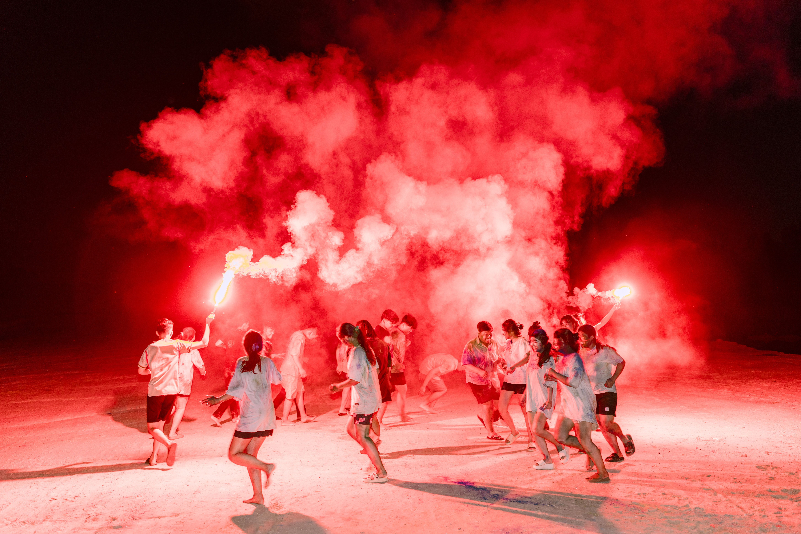

Coding Club Meetup
Technology Center, Room 204
View Event
Category: Campus Life
Join students from across Wolf Pack University for an afternoon of games, food, music, and activities hosted by student organizations.
Student Union Lawn
The Fall Festival is an opportunity for students to relax, meet new people, and explore campus organizations. Student groups will host activities throughout the afternoon.
The event area includes accessible pathways and seating. Students who need accommodations can contact the event organizers before attending. All Wolf Pack University students are welcome to participate!